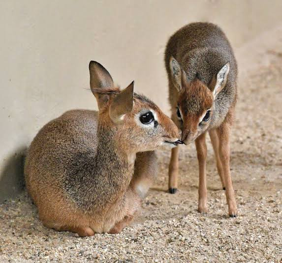

|
|
The dik-dik is a type of dwarw antelope that lives in arid regions of East Africa.They can live in such barren environments because they get water from the vegetation they eat. They also take cover in undergrowth to protect themselves from predators,including eagles and cats. There are four species of dik-diks,but just two of them live in kenya. This include guenthers dik-dik and kirks dik-dik is the largest dik-dik,though it's still small in comparison to other antelopes.It stands at just 45 centimetres (18 inches)tall and weighs only 7.2 kilograms (15.8 pounds).Guenther's dik-dik is small but has a longer snout. The IUCN list both kirks dik-dik and guethers dik-dik as least concern,though they are threatened by expanding agricultural settlements and excessive hunting in some areas |